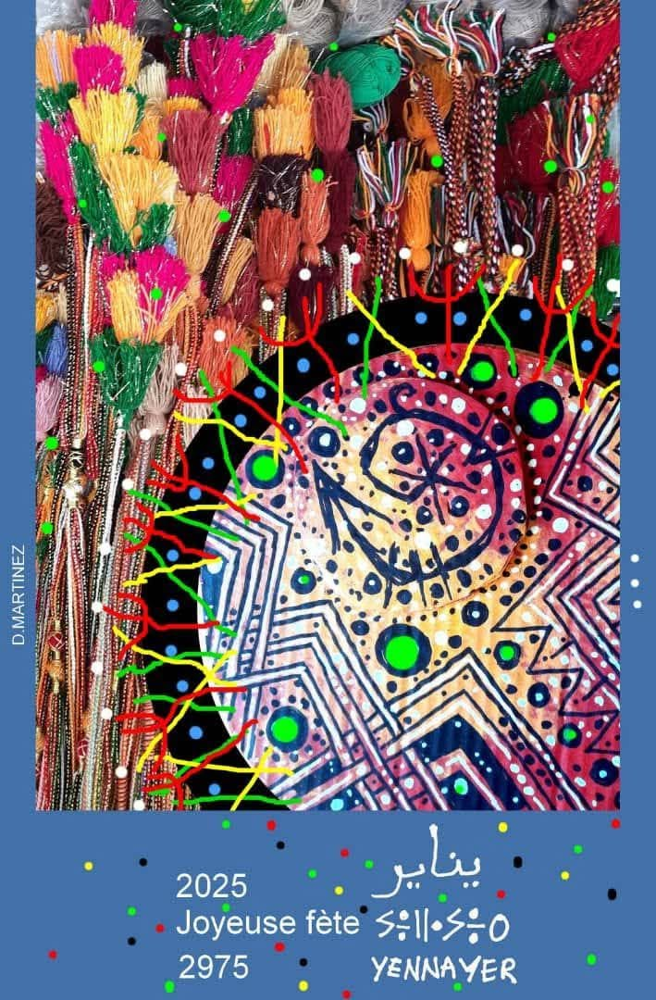

Yennayer : Le chant des ancêtres
Sous l’éclat de l’hiver, un souffle ancien,
Yennayer s’élève, dans le cœur berbère,
Un chant sacré, murmure aérien,
Qui traverse le temps, ardent et sincère.
Les montagnes se parent d’un manteau d’argent,
La terre se souvient de son sang premier,
Les astres veillent, témoins du serment,
D’un peuple debout, fier de son passé.
Les tambours résonnent, l’argile frémit,
Les danses s’élancent sous la lune claire,
Chaque note, un écho de l’esprit,
Chaque pas, un hommage aux pères et mères.
Le couscous fumant, promesse d’abondance,
Les dattes dorées, douceurs du désert,
Autour du foyer, s’étreint la cadence,
Un cercle d’amour, d’union et de lumière.
Ô Yennayer, toi l’étoile fidèle,
Tu guides nos âmes vers l’horizon,
Tu portes en toi l’histoire éternelle,
D’un peuple libre, gravé dans le son.
Ainsi, chaque année, renaît ta clarté,
L’espoir se lève sur tes cendres fécondes,
Dans le vent des cèdres, ta voix est gravée,
Yennayer, gardien des mémoires profondes.
Djamel Metref
At Yenni le 10 janvier 2025

← Tous les poèmes